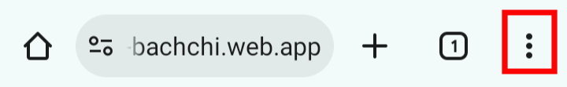
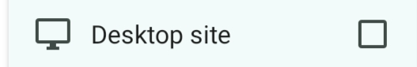

Mobile View Not Supported!!!
This site is optimized for *tablet and desktop* screens only.
Please enable *Desktop Site* mode in your browser settings to
view the content.
Follow the steps below to enable Desktop Site mode on Android:
-
Tap the ⋮ (menu) in the top-right corner of your
browser.

- Check the box next to "Desktop site" or "Request desktop site."

-
The page will reload in desktop mode and the site will be opened.